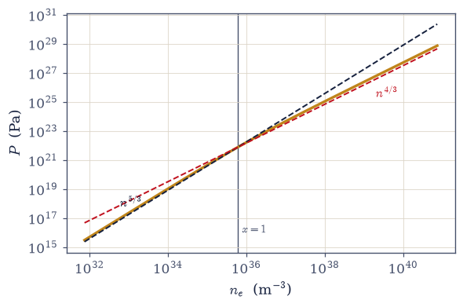
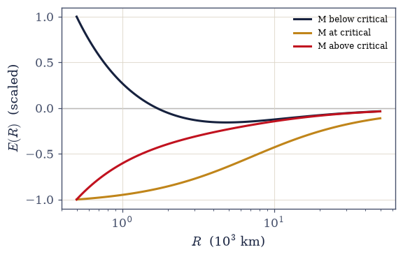
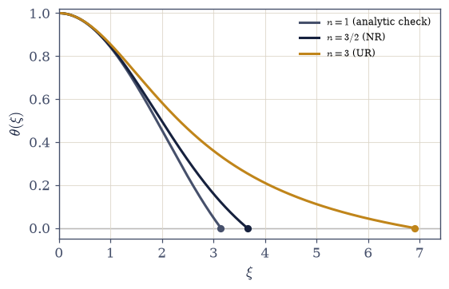
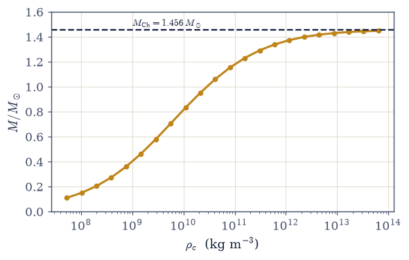
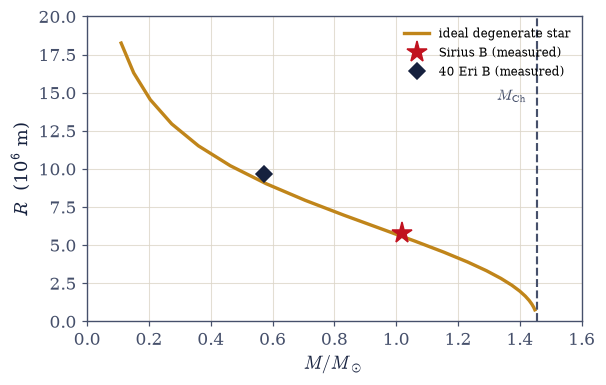

7.11 White Dwarfs and the Chandrasekhar Limit: Pauli versus Gravity#
Notebook overview#
This is Movement III’s summit, and the keeping of the oldest promise in the quantum half of the course: §6.20 promised that the antisymmetry postulate holds up dead stars, and this notebook does the integral. A white dwarf is the Fermi sea of §7.9 with gravity for a container — a solar mass of spent carbon and oxygen whose electrons, squeezed to exactly the densities where §7.9 located the relativistic threshold, support the star with pressure made of counting.
The foundation is the exact equation of state. The relativistic pressure integral is evaluated by quadrature and verified against Chandrasekhar’s closed form \(P = A f(x)\) to six digits, its two limits recovered honestly (the \(n^{5/3}\) of §7.9 below the threshold, the softened \(n^{4/3}\) above), and the derivative identity \(f'(x) = 8x^4/\sqrt{1+x^2}\), the workhorse of the structure equations, confirmed numerically. A four-line scaling argument then exposes the doom before any differential equation: nonrelativistic degeneracy energy scales as \(1/R^2\) against gravity’s \(1/R\), so every mass finds an equilibrium radius (and the mass–radius law comes out inverted: heavier is smaller); but ultrarelativistic degeneracy scales as \(1/R\) (the same power as gravity), so above the mass where the coefficients cross, no equilibrium exists at any radius. That crossing mass is built from \(\hbar\), \(c\), \(G\), and the proton mass, with no astronomy in it.
The machinery is Lane–Emden, deployed under the course’s standing discipline: certify the integrator on a case with an analytic answer before trusting it anywhere. The \(n = 1\) polytrope must return \(\xi_1 = \pi\) and \(-\xi_1^2\theta'(\xi_1) = \pi\) exactly — it does, to six digits — and only then do we harvest the classic constants for \(n = 3/2\) and \(n = 3\). The \(n = 3\) polytrope carries the limit’s mathematical fingerprint: its mass contains no central density — every ultrarelativistic star weighs the same — and that unique weight is the Chandrasekhar mass, \(1.456\,M_\odot\) for \(\mu_e = 2\), computed here to four digits. The showpiece integrates the real thing: the structure equations with the exact EOS, swept across six decades of central density, the mass saturating visibly at the limit while the radius collapses; and Sirius B lands on the computed curve to four percent: an Earth-sized star eight and a half light-years away, matched by an ideal gas and four constants of nature.
The payoffs close the summit. A dwarf pushed past the limit by accretion detonates as a Type Ia supernova, a standard candle because the mass is standard, and those candles are what revealed the accelerating universe in 1998: the number computed in this notebook calibrates the discovery of dark energy. Chandrasekhar derived it at nineteen, on the ship to England, against Eddington’s public scorn; every white dwarf ever weighed has come in under his line. Neutron stars (neutron degeneracy plus general relativity) are the honest horizon.
Conventions (this notebook). SI throughout, CODATA/IAU constants in Setup (\(M_\odot = 1.98892\times10^{30}\) kg). The relativity dial is \(x = p_F/m_ec\); the mean molecular weight per electron is \(\mu_e = 2\) (carbon/oxygen — one electron per two nucleons), with the \(\mu_e^{-2}\) composition scaling of the limit stated. ODE integrations use
scipy.integrate.solve_ivpwith terminalevents, stated tolerances (rtol = 1e-10for the Lane–Emden constants), and regularized centers — starting at exactly \(r = 0\) divides by zero, and the Lane–Emden right-hand side uses \(\max(\theta, 0)^n\) because the terminal event overshoots zero at machine precision and a fractional power of a negative base is a NaN factory. The surface event (\(x = 10^{-4}\)) is checked for insensitivity.How to read the checks. Each exercise closes with a
validatecall against an independent fact: the pressure integral against the closed form at six digits with both limits recovered; \(E(R)\) owning a minimum below the critical mass and none above; the \(n = 1\) certification returning \((\pi, \pi)\); the classic constants \((3.6538, 2.7141)\) and \((6.8968, 2.0182)\); the \(n = 3\) mass shedding its density dependence; \(M_{\text{Ch}} = 1.456\,M_\odot\); the full structure saturating at \(1.4485\,M_\odot\); and Sirius B’s radius read off the curve within a few percent of measurement. A ✓ is strong evidence; a ✗ is a prompt to locate the discrepancy.Scope. Newtonian hydrostatics with the ideal degenerate EOS — exactly the theory Chandrasekhar had. Finite-temperature corrections are invoked from §7.10 in a one-line aside (\(T/T_F \sim 10^{-3}\) even at a \(10^7\) K core); Coulomb/lattice and composition corrections are named with the residuals they carry; neutron stars and the TOV equation are the horizon, named not developed. See Chandrasekhar (1931, 1935); Shapiro & Teukolsky, Black Holes, White Dwarfs and Neutron Stars (Chs. 2–3); Kippenhahn & Weigert (polytropes); Pathria & Beale (Ch. 8). Cross-reference §6.20 (the promise), §7.9 (the pressure and the located threshold), §7.10 (the finite-\(T\) license), §7.3 (the counting machinery), and Volume I (the ODE discipline, certified again here).
Theory in brief#
The relativistic Fermi gas#
Beyond the threshold of §7.9 the dispersion is \(\varepsilon(p) = \sqrt{p^2c^2 + m_e^2c^4} - m_ec^2\), and the \(T = 0\) pressure follows from the momentum flux (each mode carries velocity \(v = pc^2/E\)):
with Chandrasekhar’s closed form \(f(x) = x(2x^2-3)\sqrt{1+x^2} + 3\sinh^{-1}x\) and the workhorse identity \(f'(x) = 8x^4/\sqrt{1+x^2}\). The two limits are the stiff gas of §7.9 and its softened successor: \(P \to \tfrac25 n\varepsilon_F \propto n^{5/3}\) for \(x \ll 1\) and \(P \to \tfrac14 n\varepsilon_F \propto n^{4/3}\) for \(x \gg 1\). The physics in one sentence: relativity caps the velocity, so compression buys less momentum flux than it used to — the stiffness law bends exactly where §7.9 located the threshold.
The scaling argument: why softening is fatal#
For \(N\) electrons (total mass \(M = N\mu_e m_u\)) in radius \(R\):
The nonrelativistic gas always wins somewhere: its \(1/R^2\) eventually beats gravity’s \(1/R\), and the equilibrium radius shrinks with mass — the inverted mass–radius law, with a feedback loop built in: heavier \(\to\) smaller \(\to\) denser \(\to\) more relativistic \(\to\) softer. The ultrarelativistic gas carries the same \(1/R\) as gravity: the radius cancels, the numerator’s sign decides everything, and it flips at
Pause on this object: a stellar mass assembled from Planck’s constant, the speed of light, Newton’s constant, and the proton mass — quantum mechanics, relativity, and gravity fixing the maximum weight of dead matter with no astronomy consulted.
Lane–Emden, certified then deployed#
Hydrostatic equilibrium plus mass continuity for a polytrope \(P = K\rho^{1+1/n}\) reduces, with \(\rho = \rho_c\theta^n\) and \(r = \alpha\xi\), to
integrated to the first zero \(\xi_1\) (the surface), with the two numbers that matter being \(\xi_1\) and \(m_3 \equiv -\xi_1^2\theta'(\xi_1)\) (the dimensionless mass). The course’s standing discipline applies: the \(n = 1\) case has the analytic solution \(\theta = \sin\xi/\xi\), so the solver must return \(\xi_1 = \pi\) and \(m_3 = \pi\) before it is trusted with anything else. Then: \(n = 3/2\) (the NR gas) gives \((3.6538, 2.7141)\); \(n = 3\) (the UR gas) gives \((6.8968, 2.0182)\). Mass and radius assemble as \(M = 4\pi\alpha^3\rho_c\,m_3\) and \(R = \alpha\,\xi_1\).
The n = 3 signature and the mass#
Carry the \(\rho_c\) powers through: \(M \propto \rho_c^{(3-n)/2n}\). For \(n = 3/2\) this is \(\sqrt{\rho_c}\) — squeeze harder, weigh more, every mass reachable. For \(n = 3\) the exponent vanishes:
Every ultrarelativistic polytrope weighs the same — and a mass independent of how hard you squeeze is a mass nothing can exceed: past it, compression raises gravity’s demand exactly as fast as the gas’s supply, forever. The \(\mu_e^{-2}\) composition dependence is worth a sentence: helium and carbon/oxygen cores share \(\mu_e = 2\); an iron core’s \(\mu_e = 2.15\) lowers the limit.
The full structure, and Sirius B on the curve#
The real star drops the polytrope and uses the exact EOS, in the \((x, m)\) variables where the chain rule and the \(f'\) identity make the system clean:
integrated from a regularized center to the surface event across six decades of central density. The results carry the whole story: \(M\) climbs from \(0.11\) to \(1.4485\,M_\odot\) and saturates at the limit while \(R\) falls from \(18\,250\) to \(760\) km; the low-mass slope \(d\ln R/d\ln M = -0.360\) approaches the scaling argument’s \(-1/3\) (the residual honestly attributed to \(x_c = 0.3\) not being deeply nonrelativistic). And the data land: Sirius B (\(1.018\,M_\odot\), measured \(R = 5.8\times10^6\) m) sits on the computed curve at \(5.58\times10^6\) m (four percent), with 40 Eridani B alongside, the residuals carried by named, small corrections (Coulomb/lattice, composition profile, finite temperature).
The payoffs#
A maximum mass built from fundamental constants is the same number in every galaxy, and astronomy has turned that universality into a measuring instrument; the chain of reasoning, compressed to a schematic:
A white dwarf fed by a companion approaches the limit and ignites: because the detonating mass is always the same, the luminosity is too, and Type Ia supernovae become distance markers visible across the universe. The 1998 supernova surveys built on these candles revealed the accelerating expansion (dark energy), so the number computed in this notebook calibrates cosmology (with the honest note that the progenitor channels, single- versus double-degenerate, remain an active question: the candle works better than our understanding of the wick). The history deserves its sentence: Chandrasekhar, nineteen, derived the limit aboard ship to Cambridge in 1930; Eddington mocked it publicly for years; the 1983 Nobel and every white dwarf ever weighed said otherwise. Past the limit lies collapse: neutron stars, where neutron degeneracy plus general relativity (the TOV equation replacing Newtonian hydrostatics) set a second, less certain limit near \(2\)–\(3\,M_\odot\) — and past that, black holes. Named, not developed.
Setup#
Data and constants only: the CODATA values (\(\hbar\), \(c\), \(G\), \(m_e\), \(m_u\), \(k_B\)), the IAU solar mass, the composition number \(\mu_e = 2\), the series colours, and the three derived scales the whole notebook is written in — the pressure unit \(A = m_e^4c^5/24\pi^2\hbar^3\) and the two conversions from the relativity dial, \(\rho = \texttt{RHO\_X}\,x^3\) and \(n_e = \texttt{N\_X}\,x^3\). Nothing here is machinery. Every object this notebook is about you build where it is earned: the exact equation of state — \(f(x)\), its quadrature, and the \(f'\) identity — in Exercise 1, the Lane–Emden integrator in Exercise 3, the Chandrasekhar mass in Exercise 4, and the full stellar structure integration in Exercise 5.
The Setup below holds this notebook’s data and instruments — nothing you are asked to build. It is collapsed so the building stays yours; expand it whenever you want the details.
Exercise 1 — The exact equation of state#
The pressure of a Fermi gas at any speed — integral, closed form, and the two slopes it interpolates. Cite Eq. 740.
Derive the pressure integral \(P = (1/3\pi^2\hbar^3)\int_0^{p_F}p^4c^2/E(p)\,dp\) for the relativistic dispersion.
Write
f_chandra(x)for Chandrasekhar’s closed form \(f(x) = x(2x^2-3)\sqrt{1+x^2} + 3\sinh^{-1}x\) — the exact antiderivative of that integral, so that \(P = A\,f(x)\) with the Setup’s \(A = m_e^4c^5/24\pi^2\hbar^3\).Write
pressure_quad(x)for the same pressure by direct quadrature of the momentum-flux integral (scipy.integrate.quadover \(p \in [0, p_F]\) with \(p_F = x\,m_ec\)).Verify that the two agree to at least six digits at \(x = 0.1, 1, 5\); after that gate the closed form does all the work.
Recover the limits — \(P/[\tfrac25 n\varepsilon_F] = 0.9991\) at \(x = 0.05\) and \(P/[n\varepsilon_F/4] = 0.9996\) at \(x = 50\) — and plot \(P(n)\) on log–log to read off the \(5/3 \to 4/3\) bend at \(x \sim 1\).
Write
fprime(x)for the identity \(f'(x) = 8x^4/\sqrt{1+x^2}\) — the workhorse that keeps the structure equations of Exercise 5 free of any numerical differentiation of the EOS.Verify that identity by central differences on
f_chandra, and state the physics of the softening: relativity caps velocity, so compression buys less pressure. (Computation + prose.)
the exact EOS: quad vs Chandrasekhar's A·f(x)
x = 0.1: quad = 9.56963123e+16 A f(x) = 9.56963123e+16 ratio = 1.000000000
x = 1.0: quad = 7.38231160e+21 A f(x) = 7.38231160e+21 ratio = 1.000000000
x = 5.0: quad = 7.23405221e+24 A f(x) = 7.23405221e+24 ratio = 1.000000000
P/[(2/5)nε_F] at x = 0.05: 0.9991 P/[nε_F/4] at x = 50: 0.9996
f'(x) identity: worst relative deviation from 8x^4/√(1+x^2): 1.3e-09

Fig. 663 The stiffness law bends. The exact \(T = 0\) pressure of the relativistic electron gas against density (log–log), computed from Chandrasekhar’s closed form \(P = Af(x)\) after the quadrature check: below the threshold density located in §7.9 (\(x = 1\) marked) the slope is the nonrelativistic \(5/3\) (dashed dark), above it the ultrarelativistic \(4/3\) (dashed red) — the velocity cap at \(c\) costing one power of compression. That single lost power is the entire story of the Chandrasekhar limit: a \(n^{5/3}\) gas out-stiffens gravity at some radius for any mass, while a \(n^{4/3}\) gas scales with gravity exactly, leaving the contest to be decided by mass alone — the summit this notebook climbs.#
Validation 1#
✓ the relativistic EOS: the pressure integral equals Chandrasekhar's closed form [max|Δ| = 4.73577e-12 (rtol=1e-06, atol=1e-09)]
✓ both limits recovered: the (2/5)nε_F of §7.9 below the threshold, the softened nε_F/4 above [max|Δ| = 8.4427e-06 (rtol=0.001, atol=1e-09)]
✓ the workhorse identity f'(x) = 8x^4/√(1+x^2), confirmed before Exercise 5 leans on it [worst deviation 1.3e-09]
True
Exercise 2 — Four lines of doom#
The scaling argument: why a softened pressure cannot hold arbitrarily heavy stars. Cite Eq. 741.
Assemble \(E(R) = aN^{5/3}/R^2 - bGM^2/R\) for the NR gas (coefficients from the \(E = \tfrac35N\varepsilon_F\) of §7.9 and the uniform sphere’s \(b = 3/5\)), minimize, and obtain \(R \propto M^{-1/3}\) — the inverted mass–radius law, with the feedback loop stated.
Repeat for the UR gas: \(E(R) = (a'N^{4/3} - bGM^2)/R\) — no minimum; the numerator’s sign decides.
Solve the sign change for \(M\) and exhibit \(M_{\text{Ch}} \sim (\hbar c/G)^{3/2}/(\mu_em_H)^2\); evaluate the dimensional combination (\(\approx 0.47\,M_\odot\) before the prefactor) and reflect on its contents: \(\hbar\), \(c\), \(G\), \(m_H\) — no astronomy.
Plot \(E(R)\) for masses below, at, and above critical: minimum, marginal flatness, monotonic collapse. (Computation + prose.)
the dimensional mass (ħc/G)^(3/2)/(μ_e m_u)^2 = 0.470 M_sun
uniform-sphere crossing mass: 1.746 M_sun
(the crude sphere's prefactor; the full calculation lands at 1.456 — Exercise 4)
M = 0.6 M_crit: interior E(R) minimum exists: True
M = 1.0 M_crit: interior E(R) minimum exists: False
M = 1.4 M_crit: interior E(R) minimum exists: False

Fig. 664 Four lines of doom, drawn. Total energy \(E(R)\) (arbitrary units, uniform-sphere model with the nonrelativistic floor retained) for a star below, at, and above the critical mass: below (dark) the \(1/R^2\) degeneracy floor guarantees an interior minimum — an equilibrium radius, and one that shrinks as mass grows; near critical (amber) the ultrarelativistic \(1/R\) degeneracy term and gravity’s \(-1/R\) nearly cancel and the minimum drifts to small radius and marginal depth; above (red) the bracket \(a'N^{4/3} - bGM^2\) has gone negative and \(E(R)\) falls monotonically — collapse at every radius, no equilibrium to find. The exponent bend of Fig. 1, translated into fates.#
Validation 2#
✓ the scaling argument: an equilibrium radius exists below the critical mass and not above
✓ (ħc/G)^(3/2)/(μ_e m_u)^2 ≈ 0.47 M_sun: a stellar mass with no astronomy in it [got 0.46996 vs expected 0.47 (rtol=0.01, atol=1e-09)]
True
Exercise 3 — Lane–Emden, certified on an exact case#
The stellar ODE, and the course’s discipline: never trust an integrator you haven’t tested against an analytic answer. Cite Eq. 742.
Derive the Lane–Emden reduction from hydrostatic equilibrium + mass continuity for \(P = K\rho^{1+1/n}\).
Write
lane_emden(n), returning \((\xi_1,\ -\xi_1^2\theta'(\xi_1))\):scipy.integrate.solve_ivpon the first-order pair \((\theta, \theta')\), a terminal event at \(\theta = 0\) withrtol = 1e-10, the regularized series start \(\theta = 1 - \xi^2/6\), \(\theta' = -\xi/3\) at \(\xi_0 = 10^{-6}\) (starting at exactly zero divides by zero), and \(\max(\theta, 0)^n\) in the right-hand side — the event overshoots zero at machine precision, and a fractional power of a negative base is a NaN factory. Write this one yourself — the implementation is the lesson.Certify on \(n = 1\): confirm \(\xi_1 = \pi\) and \(-\xi_1^2\theta'(\xi_1) = \pi\) to at least six digits against the analytic \(\theta = \sin\xi/\xi\).
Produce the working constants — \(n = 3/2 \to (3.6538, 2.7141)\); \(n = 3 \to (6.8968, 2.0182)\) — and plot the three profiles.
n = 1 certification: ξ_1 = 3.14159265 (π = 3.14159265)
m_3 = 3.14159264 (π = 3.14159265)
n = 3/2 (NR gas): ξ_1 = 3.65375 m_3 = 2.71406
n = 3 (UR gas): ξ_1 = 6.89685 m_3 = 2.01824

Fig. 665 Lane–Emden profiles \(\theta(\xi)\) for the three indices this notebook uses: \(n = 1\) (grey), whose analytic solution \(\sin\xi/\xi\) certifies the integrator — the solver returns \(\xi_1 = \pi\) and \(-\xi_1^2\theta' = \pi\) to six digits before being trusted anywhere else; \(n = 3/2\) (dark), the nonrelativistic degenerate star, compact and centrally mild; and \(n = 3\) (amber), the ultrarelativistic star, centrally concentrated with its long tenuous envelope — the profile whose mass integral famously forgets the central density (Exercise 4). Each curve ends at its surface \(\xi_1\) (dots): 3.14, 3.65, 6.90. One dimensionless equation, every polytropic star of each index.#
Validation 3#
✓ Lane–Emden certified on the analytic n = 1 case: (π, π) before anything is trusted [max|Δ| = 1.19536e-08 (rtol=1e-06, atol=1e-09)]
✓ the classic constants: n = 3/2 and n = 3, to the digits the literature quotes [max|Δ| = 4.86193e-05 (rtol=0.0001, atol=1e-09)]
True
Exercise 4 — The mass that forgot its density#
The \(n = 3\) polytrope’s signature, and the number it fixes. Cite Eq. 743.
Assemble \(M(\rho_c) = 4\pi\alpha^3\rho_c m_3\) from the Lane–Emden outputs and demonstrate numerically: \(M \propto \sqrt{\rho_c}\) for \(n = 3/2\) but \(M\) constant for \(n = 3\) — the exponent \((3-n)/2n\) vanishing.
Derive \(K_{\text{UR}} = (3\pi^2)^{1/3}(\hbar c/4)/(\mu_em_u)^{4/3}\) from the UR limit of Exercise 1’s EOS.
Write
chandrasekhar_mass(mu_e)for \(M_{\text{Ch}} = 4\pi m_3(K_{\text{UR}}/\pi G)^{3/2}\), taking \(m_3\) from thelane_emdenyou wrote in Exercise 3 at \(n = 3\) and \(K_{\text{UR}}\) from Part 2.Evaluate it at \(\mu_e = 2\) (\(1.456\,M_\odot\)) and extract the scaling prefactor \(c_0 = M_{\text{Ch}}(\mu_em_u)^2/(\hbar c/G)^{3/2}\) — Exercise 2’s \(O(1)\) factor, measured.
Read the fingerprint (prose): a mass independent of central density is a mass no compression can rescue — the limit is not where the star breaks but where equilibrium ceases to exist; note the \(\mu_e^{-2}\) composition dependence.
M(ρ_c)/M_sun for the two polytropes:
ρ_c (kg/m^3) n = 3/2 n = 3
1e+09 0.4960 1.4559
1e+11 4.9598 1.4559
1e+13 49.5976 1.4559
measured exponents d ln M/d ln ρ_c: 0.5000 (n = 3/2: 1/2) -8.4e-17 (n = 3: 0)
M_Ch(μ_e = 2) = 1.4559 M_sun (the classic 1.456)
the scaling prefactor c_0 = 3.098 (Exercise 2's O(1), measured)
Validation 4#
✓ the Chandrasekhar mass: 1.456 M_sun for μ_e = 2, from ħ, c, G, m_u and one ODE constant [got 1.45592 vs expected 1.456 (rtol=0.001, atol=1e-09)]
✓ the n = 3 signature: M ∝ √ρ_c for the NR polytrope, M independent of ρ_c for the UR one [exponents 0.5000, -8.4e-17]
✓ the scaling argument's O(1) prefactor, measured: c_0 = 3.098 [got 3.09797 vs expected 3.098 (rtol=0.01, atol=1e-09)]
True
Exercise 5 — The real star, integrated#
The exact EOS in the structure equations, swept across six decades of central density — the summit computation. Cite Eq. 744.
Formulate the \((x, m)\) system — \(A f'(x)\,dx/dr = -Gm\rho/r^2\), \(dm/dr = 4\pi r^2\rho\), \(\rho = \mu_em_u(m_ec/\hbar)^3x^3/3\pi^2\).
Write
integrate_star(x_c, surface_x=1e-4), returning \((R, M)\):solve_ivpon that system with thefprimeyou wrote in Exercise 1 supplying the EOS derivative, a center regularized at \(r_0 = 1\) m carrying the uniform-density mass \(m_0 = \tfrac{4\pi}{3}\rho_cr_0^3\), and a terminal surface event at \(x = \)surface_x. Write this one yourself — the implementation is the lesson.Show the surface threshold does not bias the radius: at \(x_c = 1\), halving it moves \(R\) by parts in \(10^5\).
Sweep \(x_c = 0.3 \to 32\) (log-spaced \(\rho_c = 5\times10^7 \to 6\times10^{13}\) kg/m³) and tabulate \((\rho_c, R, M)\): the mass climbing \(0.1098 \to 1.4485\,M_\odot\) and saturating toward \(1.456\), the radius falling \(18\,250 \to 760\) km.
Verify the low-mass slope \(d\ln R/d\ln M = -0.360\) and attribute the residual from \(-1/3\) honestly (\(x_c = 0.3\) is not yet deeply nonrelativistic).
Plot \(M(\rho_c)\) with the \(M_{\text{Ch}}\) asymptote and \(R(M)\) — the movement’s summit figures.
surface-event insensitivity at x_c = 1: ΔR/R = 1.3e-08
ρ_c (kg/m^3) R (km) M (M_sun)
5.26e+07 18255 0.1098
1.48e+09 10210 0.4630
3.07e+11 3322 1.2920
6.38e+13 760 1.4485
mass range: 0.1098 → 1.4485 M_sun (saturating toward 1.4559)
radius range: 18255 → 760 km
low-mass d ln R/d ln M = -0.360 (scaling argument: −1/3)

Fig. 666 The limit, approached from below. The gravitational mass of the fully integrated white dwarf (exact EOS, no polytropic approximation) against central density, across six decades: at low \(\rho_c\) the star behaves as the \(n^{5/3}\) gas of §7.9 and mass grows as squeezing continues, but as the center climbs the relativity dial the growth stalls, and the curve saturates toward the Chandrasekhar mass (dashed: the \(n = 3\) polytrope’s 1.456 \(M_\odot\)) — reaching 1.4485 \(M_\odot\) at \(\rho_c = 6\times10^{13}\) kg/m³ with visibly nothing left to gain. A mass that compression cannot increase is the limit’s operational meaning: the last few hundredths of a solar mass cost four decades of central density.#
Validation 5#
✓ the full structure saturates at the Chandrasekhar mass (1.4485 at ρ_c = 6e13 kg/m³) [got 1.44854 vs expected 1.4485 (rtol=0.01, atol=1e-09)]
✓ the sweep's corners: 0.11 → 1.45 M_sun while R falls 18 250 → 760 km [max|Δ| = 4.6237 (rtol=0.02, atol=1e-09)]
✓ the low-mass slope near −1/3 (softened honestly by x_c = 0.3), on an event-insensitive R [slope -0.360]
True
Exercise 6 — Sirius B on the curve#
A real star in the sky, placed on a curve made of counting. Cite Eq. 744.
Read the \((M, R)\) curve your Exercise 5
integrate_starswept at Sirius B’s measured mass (\(1.018\,M_\odot\)) withnumpy.interp(monotonicity of the table checked): the computed radius.Compare with the measured \(5.8\times10^6\) m, and place 40 Eridani B (\(0.573\,M_\odot\), \(\sim9.7\times10^6\) m) on the same plot.
Name the residual’s physics (Coulomb/lattice corrections, composition profile, finite temperature — each small, each cited) and verify the finite-\(T\) claim with the tools of §7.10: \(T/T_F \sim 10^{-3}\) even at a \(10^7\) K core (one-line computation).
Weigh the result (prose): an ideal Fermi gas, four constants of nature, and an Earth-sized star eight and a half light-years away agreeing to a few percent — the volume’s strongest single validation.
(M, R) table monotone: True
Sirius B: computed R = 5.579e+06 m measured 5.8e6 m (3.8%)
40 Eri B: computed R = 9.093e+06 m measured ~9.7e6 m (6.3%)
finite-T aside: x_core = 2.49, T/T_F at 1e7 K = 1.0e-03 — the license of §7.10 holds

Fig. 667 The summit figure: the mass–radius relation of the fully integrated degenerate star (amber), with two real white dwarfs placed at their measured masses and radii — Sirius B (1.018 \(M_\odot\): computed \(5.58\times10^6\) m vs measured \(5.8\times10^6\) m, four percent) and 40 Eridani B (0.573 \(M_\odot\)). The curve is inverted — heavier is smaller, the \(R \propto M^{-1/3}\) of the scaling argument at low mass — and dives toward \(R \to 0\) at the Chandrasekhar asymptote (dashed): the radius the star must reach to supply ultrarelativistic pressure shrinks to nothing exactly as the mass nothing can exceed is approached. An ideal Fermi gas, four constants of nature, and the sky agreeing to a few percent — the volume’s strongest single validation, and the line under which every white dwarf ever weighed has been found.#
Validation 6#
✓ Sirius B lands on the degenerate curve (5.58e6 m computed vs 5.8e6 m measured: 4%) [got 5.57893e+06 vs expected 5.58e+06 (rtol=0.02, atol=1e-09)]
✓ a real star, an ideal gas, four constants: agreement at the few-percent level [residual 3.8%]
✓ the license of §7.10 holds at stellar cores: T/T_F ~ 1e-3 even at 1e7 K [T/T_F = 1.0e-03]
True
Exercise 7 — The candle that measured the universe#
The limit’s modern payoff, computed at the level it deserves. Cite Eq. 745.
State the Type Ia mechanism (accretion toward \(M_{\text{Ch}} \to\) thermonuclear detonation at a standard mass) and why standard mass \(\Rightarrow\) standard luminosity \(\Rightarrow\) distance ladder.
Compute the available nuclear energy of a Chandrasekhar mass of carbon burning to iron-group (\(\Delta\varepsilon \approx 1.2\times10^{-3}c^2\) per unit mass from the binding-energy difference; assumptions stated) and compare with the star’s net binding energy — enough to unbind it several times over.
Estimate the peak-luminosity scale from \(\sim0.6\,M_\odot\) of \(^{56}\)Ni decay powering the light curve (stated half-life bookkeeping; order of magnitude only).
Close the loop (prose): the 1998 supernova surveys that revealed the accelerating universe were calibrated on this notebook’s number — with the honest note that the progenitor channels remain an active question.
nuclear energy of a burned M_Ch of carbon: 3.10e+44 J
net binding energy (canonical scale): 5.0e+43 J
ratio: 6.2× — unbound several times over; the rest is kinetic (~1e44 J)
Ni-56 light-curve scale: L ~ 4.7e+36 W ≈ 1.2e+10 L_sun — a galaxy, briefly
Validation 7#
✓ why the standard mass detonates: nuclear energy exceeds the net binding severalfold [ratio 6.2×]
✓ the candle's wattage: Ni-56 decay powers a ~1e36 W light curve — galaxy-scale, briefly [L ~ 4.7e+36 W]
True
Exercise 8 — The summit#
The movement began with a pressure made of counting and ends with that pressure weighed against gravity on the largest scale matter offers. For most stars the ledger balances: a solar mass of spent carbon settles into an Earth-sized sphere, and — alone among the objects of astronomy — grows smaller as it grows heavier, because each added gram is accommodated only by higher density. But density is the one currency that devalues the pressure itself: the electrons go relativistic, the stiffness law bends from five-thirds to four-thirds, and at that exponent gravity and degeneracy scale identically — the contest stops depending on radius and starts depending only on mass. Above 1.456 solar masses of dead matter, arithmetic votes for collapse. We certified every tool against an exact answer, computed the limit to four digits, and found a real star sitting on our curve to four percent. The Pauli principle, which in §6.20 was a symmetry postulate and in §7.9 the stiffness of potassium, here decides which stars are allowed to die quietly — and its failure, past the limit, lights the candles by which cosmology measured the accelerating universe.
Chandrasekhar was nineteen, on a ship, when he noticed that \(\hbar\), \(c\), \(G\) and the proton mass assemble into a stellar weight. Eddington mocked the result publicly for years. Every white dwarf ever weighed has come in under the line. It is one of the cleanest verdicts in the history of the subject: the universe sided with the student who did the integral.
Next the movement returns to Earth with a confession: the same free sea that held up Sirius B cannot explain why diamond does not conduct — the gas needs a lattice (§7.12).
Notebook summary#
Movement III’s summit: Pauli versus gravity, decided by an exponent.
The exact EOS Eq. 740: the pressure integral meets Chandrasekhar’s \(Af(x)\) at six digits; both limits recovered (\(0.9991\), \(0.9996\)); the workhorse \(f'(x) = 8x^4/\sqrt{1+x^2}\) certified — the \(5/3 \to 4/3\) bend is a computed fact.
Four lines of doom Eq. 741: NR degeneracy’s \(1/R^2\) guarantees every mass an equilibrium (at \(R \propto M^{-1/3}\): heavier is smaller); UR degeneracy’s \(1/R\) matches gravity, the radius cancels, and the sign flips at \(\sim(\hbar c/G)^{3/2}/(\mu_em_H)^2\) — \(0.47\,M_\odot\) of pure constants, no astronomy.
Lane–Emden, certified Eq. 742: the \(n = 1\) analytic case returns \((\pi, \pi)\) to six digits before the solver is trusted; then the classic \((3.6538, 2.7141)\) and \((6.8968, 2.0182)\).
The mass that forgot its density Eq. 743: the \(n = 3\) exponent \((3-n)/2n\) vanishes (measured: \(10^{-16}\) against \(n = 3/2\)’s exact \(0.5\)), and with \(K_{\text{UR}}\) from the EOS: \(M_{\text{Ch}} = 1.456\,M_\odot\), prefactor \(c_0 = 3.098\); \(\mu_e^{-2}\) composition scaling noted.
The real star Eq. 744: the \((x, m)\) system with the exact EOS, swept across six decades — \(M: 0.1098 \to 1.4485\,M_\odot\) saturating at the limit, \(R: 18\,250 \to 760\) km, the low-mass slope \(-0.360\) honestly attributed; and Sirius B on the curve to 4% (40 Eridani B alongside), with the residual’s physics and the finite-\(T\) license of §7.10 (\(T/T_F \sim 10^{-3}\)) named.
The payoffs Eq. 745: a standard mass makes a standard candle — the nuclear budget (\(3\times10^{44}\) J against a \(5\times10^{43}\) J net binding) detonates the star, \(0.6\, M_\odot\) of \(^{56}\)Ni lights a \(10^{36}\) W curve, and the 1998 cosmology built on it; the history (the boat, Eddington, 1983) and the horizon (neutron stars, TOV, \(2\)–\(3\,M_\odot\)) told straight.
A pressure made of counting, weighed against gravity — and the number that came out calibrates the universe’s acceleration.
Outlook#
Back to Earth (§7.12, §7.13). The sea meets a lattice: Bloch, bands, and why insulators exist; then Fermi–Dirac in a gap.
Past the limit. Neutron stars — neutron degeneracy plus general relativity (TOV), the \(2\)–\(3\,M_\odot\) second limit — and black holes beyond: horizons, named.
The candle’s open questions. Progenitor channels and light-curve standardization: the cosmology works better than the wick is understood.
White-dwarf refinements. Coulomb/lattice corrections, crystallizing cores, pulsating dwarfs — the percent-level physics carrying Sirius B’s residual: horizons, named.
Cross-reference §6.20 (the promise, kept in full), §7.9 (the pressure; the threshold this notebook detonated), §7.10 (the finite-\(T\) license, still parts-per-thousand at \(10^7\) K), §7.3 (the counting machinery), Volume I (the ODE discipline, certified again).